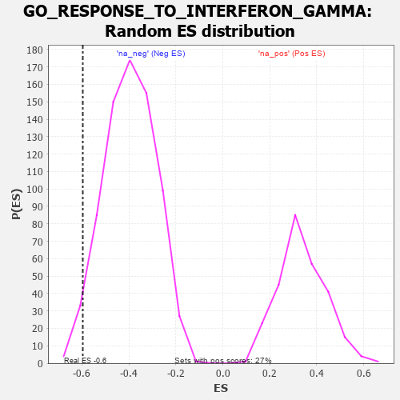

| | | Dataset | 7d |
| Phenotype | NoPhenotypeAvailable |
| Upregulated in class | na_neg |
| GeneSet | GO_RESPONSE_TO_INTERFERON_GAMMA |
| Enrichment Score (ES) | -0.5962725 |
| Normalized Enrichment Score (NES) | -1.5036492 |
| Nominal p-value | 0.026098901 |
| FDR q-value | 0.18621443 |
| FWER p-Value | 1.0 |
Table: GSEA Results Summary
 Fig 1: Enrichment plot: GO_RESPONSE_TO_INTERFERON_GAMMA
Fig 1: Enrichment plot: GO_RESPONSE_TO_INTERFERON_GAMMA
Profile of the Running ES Score & Positions of GeneSet Members on the Rank Ordered List
| PROBE | GENE SYMBOL | GENE_TITLE | RANK IN GENE LIST | RANK METRIC SCORE | RUNNING ES | CORE ENRICHMENT | | 1 | TRIM5 | | | 1852 | 0.327 | -0.2090 | No |
| 2 | IRF4 | | | 2054 | 0.298 | -0.2126 | No |
| 3 | PDE12 | | | 2608 | 0.211 | -0.2667 | No |
| 4 | DAPK3 | | | 2880 | 0.169 | -0.2885 | No |
| 5 | GCH1 | | | 3166 | 0.127 | -0.3150 | No |
| 6 | MED1 | | | 3405 | 0.089 | -0.3385 | No |
| 7 | CDC37 | | | 4446 | -0.084 | -0.4632 | No |
| 8 | NUB1 | | | 4604 | -0.119 | -0.4742 | No |
| 9 | CASP1 | | | 4932 | -0.185 | -0.5019 | No |
| 10 | FLNB | | | 5082 | -0.220 | -0.5045 | No |
| 11 | TLR2 | | | 5761 | -0.395 | -0.5609 | Yes |
| 12 | VAMP3 | | | 6043 | -0.487 | -0.5608 | Yes |
| 13 | EVL | | | 6052 | -0.490 | -0.5260 | Yes |
| 14 | CDC42 | | | 6236 | -0.548 | -0.5090 | Yes |
| 15 | NCAM1 | | | 6318 | -0.582 | -0.4767 | Yes |
| 16 | RAB43 | | | 6419 | -0.628 | -0.4435 | Yes |
| 17 | OTOP1 | | | 6562 | -0.690 | -0.4110 | Yes |
| 18 | KYNU | | | 6802 | -0.816 | -0.3816 | Yes |
| 19 | MRC1 | | | 7940 | -3.475 | -0.2710 | Yes |
| 20 | DAPK1 | | | 7950 | -3.767 | 0.0026 | Yes |
Table: GSEA details [plain text format]

Fig 2: GO_RESPONSE_TO_INTERFERON_GAMMA: Random ES distribution
Gene set null distribution of ES for GO_RESPONSE_TO_INTERFERON_GAMMA